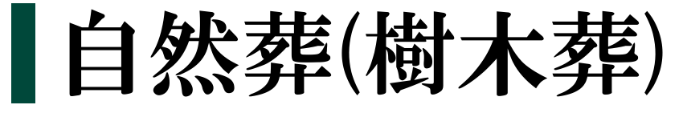
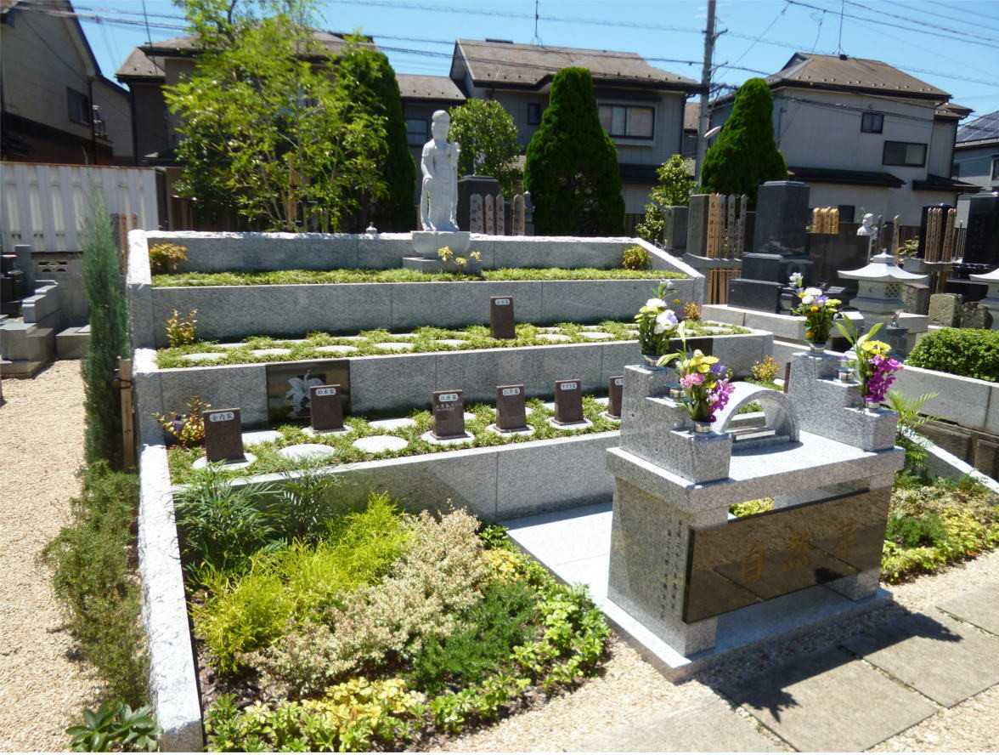
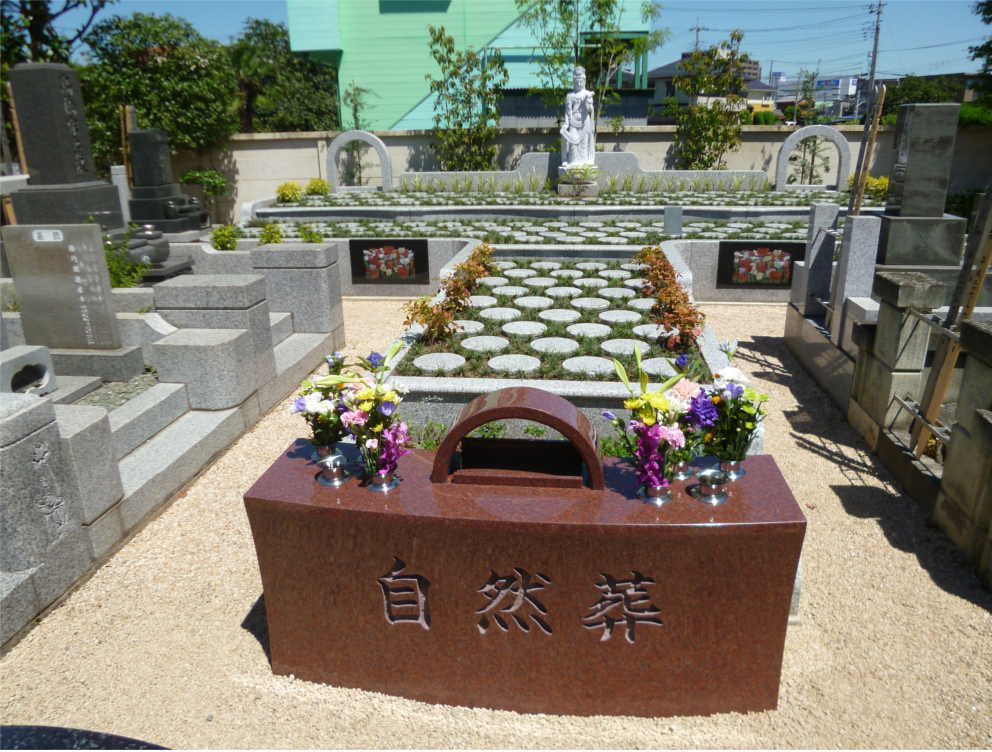
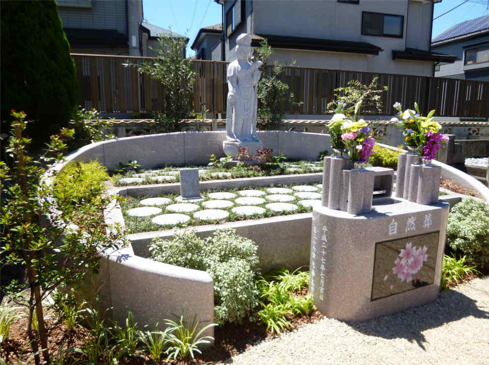

・年間管理費等は一切必要ありません。
・宗教・宗派は問いません。
・生前のお申し込みもお受け致します。
・ご遺骨をサラシに包み、期限を設けず埋葬致します。
・永代供養の為、後継者がおられなくとも安心してお入り頂けます。
・区画がしっかりと分かれている為、他のご家族のご遺骨と混合することはありません。
・個別墓誌を建てる為、どなたがどちらに埋葬されているかがすぐに分かります。
・ご遠方のお墓の改葬(移転)もお受け致します。



| 納骨(予定)人数 | 永代使用料総額 |
| 1名 | 60万円 |
| 2名 | 65万円 |
| 3名 | 80万円 |
| 4名 | 95万円 |
| 5名 | 110万円 |
| 6名 | 125万円 |
| 7名 | 140万円 |